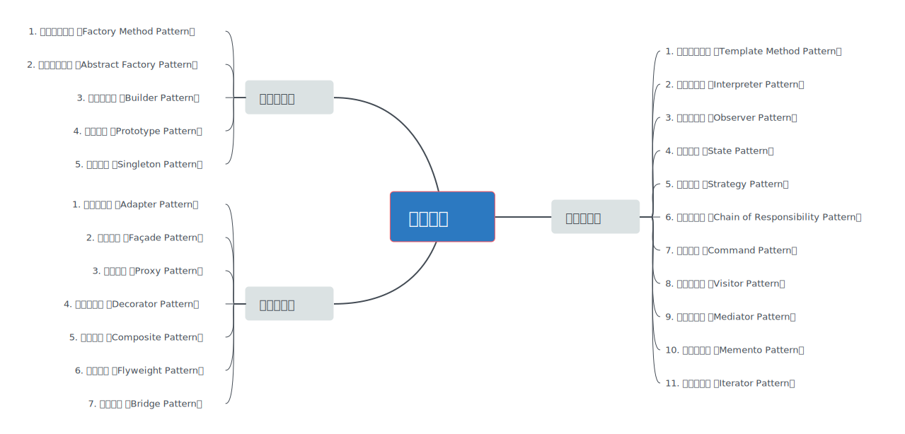

设计模式概述
- 设计模式（Design Pattern）是针对软件设计中普遍存在（反复出现）的各种问题所提出的解决方案；
- 该术语由Erich Gamma、Richard Helm、Ralph Johnson和John Vlissides等人在1990年代从建筑设计领域引入到计算机科学，而该4人被称为Gang of Four（简称GoF）。

设计模式分类
GoF提出的经典设计模式共有23种，这些设计模式可归类为：① 创建型模式；② 结构型模式；③ 行为型模式。具体如下图所示：

设计模式作用
- 提高代码复用性
- 改善代码可维护性
- 提升代码可读性
- 保证代码可靠性
- 促进代码编写工程化
结束语
在软件设计时，不论是宏观的架构设计，还是微观的代码设计，都围绕一个普遍的问题，即“分”与“合”、“动”与“静”的权衡。而23种经典设计模式也在不遗余力地处理该问题，并提供相应的设计指南。后续将连载以下3篇：
- 《浅谈设计模式·驾驭变化之道（创建型模式篇）》
- 《浅谈设计模式·驾驭变化之道（结构型模式篇）》
- 《浅谈设计模式·驾驭变化之道（行为型模式篇）》
参考资料
Software Design Pattern from Wikipedia